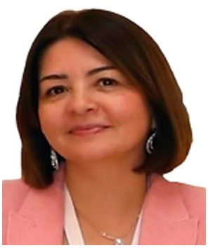

Profile
Vefa Kurban is a professor at the Institute of Turkish World Studies of Ege University. She received a doctorate in the history of the Republic of Turkey from Ege University on 26 March 2007. The thesis is urbanization and settled life in Azerbaijan between 1900 and 1978, supervised by Tuncer Baykara. Her master’s thesis, on land ownership in Azerbaijan in the late nineteenth and early twentieth centuries, was completed on 23 June 2000. Her bachelor’s degree in history is from Ege University, dated 3 September 1997. She was an associate professor at Izmir University of Economics from 2007 to 2019 and at Ege University from 2015 to 2019.
Work experience
Ege University, Izmir, Turkey
2021Professor
- 2021
Ege University
2015–2019Associate Professor
Faculty of Arts and Sciences, Izmir University of Economics
2007–2019Associate Professor
Faculty of Letters, Dokuz Eylül University
2012–2014Assistant professor
Education
PhD
26 March 2007History of the Republic of Turkey. Thesis: urbanization and settled life in Azerbaijan, 1900–1978. Advisor: Tuncer Baykara
Ege University
Master’s degree
23 June 2000Land ownership in Azerbaijan in the late nineteenth and early twentieth centuries. Advisor: Tuncer Baykara
Ege University
Bachelor’s degree
3 September 1997History
Faculty of Letters, Ege University
Supervision
- Master’s — Completed theses at Ege University are listed, including work on the Organization of Turkic States
Publications
Books and textbooks
1. C. Yazılan ulusal/uluslararası kitaplar veya kitaplardaki bölümler: C1. Yazılan ulusal/uluslararası kitaplar: Historical Background of the Karabakh Conflict and Shusha, the Cultural Capital (2023)., KURBAN VEFA, Cambridge Scholars Publishing, Basım sayısı:1, Sayfa Sayısı 595, ISBN:ISBN: 1-5275-1263- 0, İngilizce(Bilimsel Kitap)
2. STRATEJİK PARALAKSIN DOĞDUĞU NOKTADATÜRK VE RUS İLİŞKİLERİNİN GELECEĞİ:KIBRIS VE ÖTESİ (2020)., ERGÜN OĞUZHAN,KURBAN VEFA,ÇÜMEN NUR,GÜL BURCU, Iksad, Editör:Doç. Dr. Vefa KURBAN, Basım sayısı:1, Sayfa Sayısı 212, ISBN:978-625-7914-82-6, Türkçe(Bilimsel Kitap)
3. The Caucasus Policy of Russia in the Early 21st Century (2020)., KURBAN VEFA, Cambridge Scholars Publishing, Editör:KURBAN VEFA, Basım sayısı:1, Sayfa Sayısı 159, ISBN:(10):1-5275-5788-X, İngilizce(Bilimsel Kitap)
4. Sovyet Sosyalist Cumhuriyetler Birliği Tarihi (2020)., KURBAN VEFA, Yeditepe, Basım sayısı:1, Sayfa Sayısı 464, ISBN:9786057800657, Türkçe(Bilimsel Kitap)
5. No: 6539776) 5. TARİHİ, SOSYO-KÜLTÜREL YAPISI VE SİYASAL YÖNLERİYLE ÇEÇENLER (2020)., KURBAN VEFA,FEDAKAR PINAR,UÇKUN RABİA,ÖRAZ BEŞİKÇİ SEÇİL,KUREŞ Mehmet Nuri,ÇÜMEN Nur,GÜL Burcu, İKSAD, Editör:-, Basım sayısı:1, Sayfa Sayısı 218, ISBN:978-625-7279-91-8, Türkçe(Bilimsel Kitap)
6. JEOPOLİTİK ŞEKİLLENDİRME VETÜRK-RUS İLİŞKİLERİPostmodern Jeopolitik,İnfosfer Kirliliği ve Güç Siyaseti (2020)., ERGÜN OĞUZHAN,KURBAN VEFA, Yeditepe, Editör:Yağmur Yıldırımay, Basım sayısı:1, Sayfa Sayısı 144, ISBN:978-605-7800-69-5, Türkçe(Bilimsel Kitap)
7. RUSSİAN-TURKİSH RELATİONS FROM THE FİRST WORLD WAR (2017)., KURBAN VEFA, CAMBRİDGE, Basım sayısı:1, Sayfa Sayısı 306, ISBN:(10):1-4438-1777-5, İngilizce(Bilimsel Kitap)
8. NOBELLER NOBEL ÖDÜLÜ VE BAKÜ PETROLLERİ (2013)., KURBAN VEFA, YEDİTEPE, Editör:AYKUT CAN, Basım sayısı:1, Sayfa Sayısı 343, ISBN:978-605-5200-27-5, Türkçe(Bilimsel Kitap)
Book chapters
1. ATATÜRK’E ARMAĞAN, Bölüm adı:(TÜRK TARİHİ VE TÜRK SANATI AÇISINDAN ŞUŞA’DAKİ SAATLI MESCİDİ’NİN YERİ VE ÖNEMİ) (2023)., KURBAN VEFA, UÇAR AYGÜL, BERİKAN, Editör:Prof. Dr. Şayan ULUSAN ve Doç. Dr. Nilgün Nurhan KARA, Basım sayısı:1, Sayfa Sayısı 436, ISBN:ISBN: 978-625-6591-04-2, Türkçe(Bilimsel Kitap)
2. Beşeri Bilimler Araştırma, Metodoloji ve Değerlendirme, Bölüm adı:(DAYATILAN KİMLİK VE HEGEMONYA: YENİ RUS ÇARLIĞI’NA GİRİŞ) (2022)., KURBAN VEFA, ERGÜN OĞUZHAN, Livre de Lyon, Editör:Ruhi İNAN, M. Fatih SANSAR, Basım sayısı:1, Sayfa Sayısı 297, ISBN:978-2-38236-454-3, Türkçe(Bilimsel Kitap)
3. Sosyal ve Beşeri Bilimlerde Değerlendirme ve Araştırmalar, Bölüm adı:(DENGE POLİTİKALARI VE TÜRKİYENİN STRATEJİK İKİLEMİ) (2021)., ERGÜN OĞUZHAN, KURBAN VEFA, Livre de Lyon, Editör:Doç. Dr. Ruhi İNAN, Basım sayısı:1, Sayfa Sayısı 278, ISBN:978-2-38236-186-3, Türkçe(Bilimsel Kitap)
4. KAFKASYA 4., Bölüm adı:(Algı ve Olgu Arasında Karabağ Zaferi Silahlı Savaştan Silahlı Siyasete Azerbaycan) (2021)., KURBAN VEFA, ERGÜN OĞUZHAN, İKSAD, Editör:Vefa Kurban Seçil Öraz Beşikçi Recep Efe Çoban, Basım sayısı:1, Sayfa Sayısı 618, ISBN:ISBN: 978-625-7562-15-7, Türkçe(Bilimsel Kitap)
5. TOPLUM BİLİMLERİNDE AKADEMİK ÇALIŞMALAR, Bölüm adı:(UKRAYNA’DAN AZERBAYCAN’A LİMİNAL SİYASET VE RUSYA) (2021)., ERGÜN OĞUZHAN, KURBAN VEFA, Livre de Lyon, Editör:Prof. Dr. Türkan ERDOĞAN Dr. M. Fatih SANSAR, Basım sayısı:1, Sayfa Sayısı 251, ISBN:978-2-38236-162-7, Türkçe(Bilimsel Kitap)
6. WAR ERA, Bölüm adı:(INSIDE AND OUTSIDE SHAPING INITIATIVES OF RUSSIA IN SOUTH CAUCASUS AND NAGORNO-KARABAKH WAR WITH REFLECTIONS FROM TASS NEWS AGENCY) (2021)., KURBAN VEFA, İKSAD, Editör:Vefa KURBAN Muvaffk DURANLI, Basım sayısı:1, Sayfa Sayısı 364, ISBN:ISBN: 978-625-7562-14-0 İngilizce(Bilimsel Kitap)
7. Turkish-Russian Relations in the Context of Social Economic and Political Progress in the Post Cold Era, Bölüm adı:(Rus Stratejik Kültürünün Yeni Dönem Dış Politikalarına Etkisine İlişkin Sorgular) (2021)., ERGÜN OĞUZHAN, KURBAN VEFA, Livre de Lyon, Editör:Prof. Dr. Vefa KURBAN ve Dr. Çağdaş DUMAN, Basım sayısı:1, Sayfa Sayısı 18, ISBN:978-2-38-236-221-1, Türkçe(Bilimsel Kitap)
8. The Evaluations and Researches in Social Sciences and Humanities, Bölüm adı:(THE FUTURE of UKRAİNE WITHİN THE FRAMEWORK of GLOBAL POWER BALANCES) (2021)., KURBAN VEFA, DUMAN ÇAĞDAŞ, Livre de Lyon, Editör:Assoc. Prof. Dr. Mehmet Sarioglan Dr. M. Fatih Sansar, Basım sayısı:1, Sayfa Sayısı 409, ISBN:978-2-38236-187-0, İngilizce(Bilimsel Kitap)
9. New Perspectives and Research in Social Sciences, Bölüm adı:(BASIC PARAMETERS OF RUSSIA AND TURKEY IN THE EASTERN MEDITERRANEAN CRISIS IN THE LIGHT OF RECENT DEVELOPMENTS) (2021)., KURBAN VEFA, ÇÜMEN Nur, Lambert Academic Publishing, Editör:Ayça Sarıalioğlu Hayali, Basım sayısı:1, Sayfa Sayısı 225, ISBN:978-620-3-85455-8, İngilizce(Bilimsel Kitap)
10. 100. Yılında Türkiye-Rusya İlişkileri (Moskova Antlaşması'ndan Günümüze), Bölüm adı:(SURİYE MESELESİ DİYALEKTİĞİNDE TÜRKİYE-RUSYA DİPLOMATİK PARADİGMASI (2015-2020)) (2021)., KURBAN VEFA, GÜL Burcu, AKÇAĞ, Editör:Prof. Dr. Mehmet OKUR, Dr. Öğr. Üyesi Yüksel KÜÇÜKER, Dr. Ahmet Nafiz ÜNALMIŞ, Basım sayısı:1, Sayfa Sayısı 52, ISBN:9978-605-342-713- 1, Türkçe(Bilimsel Kitap)
11. Critical Studies in SOCIAL SCIENCES AND HUMANİTİES, Bölüm adı:(MILLENNIAL PAIN IN THE TRANS-CAUCASUS AND AZERBAIJAN) (2020)., KURBAN VEFA,ERGÜN OĞUZHAN, Livre de Lyon, Editör:Assoc. Prof. Dr. Mehmet SarıoğlanAsst. Prof. Dr. Sercan Hamza Bağlama, Basım sayısı:1, Sayfa Sayısı 24, ISBN:978-2-38236-066-8, İngilizce(Bilimsel Kitap)
12. DİSİPLİNLERARASI POLİTİKA VİZYONU VE STRATEJİLER, Bölüm adı:(Tarihi Ve Güncel Boyutları İle Karabağ) (2020)., KURBAN VEFA, ÇÜMEN Nur, İKSAD, Editör:İbrahim Demir, Basım sayısı:1, Sayfa Sayısı 383, ISBN:978-625-7687-59-1, Türkçe(Bilimsel Kitap)
13. SİYASİ, Sosyal ve Kültürel Yönleriyle Türkiye ve Rusya 3, Bölüm adı:(SSCB ve Türkiye-İki Ülkenin Sansürlü Basınında 12 Eylül1980 Askeri Darbesinin Yansımaları-Karşılaştırmalı Yaklaşım) (2019)., KURBAN VEFA, Berikan Yayınevi, Editör:Muhammed Mücahit Küçükyılmaz, Basım sayısı:1, Sayfa Sayısı 17, ISBN:9786057634986, İngilizce(Bilimsel Kitap)
14. Bağımsızlıklarının Yirmi Yedinci Yılında Türk Cumhuriyetleri, Bölüm adı:(Azerbaycan) (2018)., KURBAN VEFA,Aslanlı Araz,Musayev Geray,Caferov Nazim, Ahmet Yesevi Üniversitesi, Editör:Ayşe Çolpan Yıldız, Murat Yılmaz, Basım sayısı:1, Sayfa Sayısı 465, ISBN:9789944237741, Türkçe(Bilimsel Kitap)
Peer-reviewed journal articles
1. across the Turkic World. Türk Kültürü ve Hacı Bektaş Veli Araştırma Dergisi, Doi: 10.60163/tkhcbva.1470705
2. Şuşa Yukarı Gövher Ağa Camii. Sanat Tarihi Dergisi, 32(2), 1001-1023., Doi: 10.29135/std.1309474
3. KURBAN VEFA, BURCU GÜL (2023). CONSIDERING TURKISH-RUSSIAN RELATIONS FROM A HISTORICAL PERSPECTIVE: BORIS NIKOLAYEVICH YELTSIN’S PERIOD. ISLAMIC HISTORY AND LITERATURE, 2, 135-147.
4. SAVAŞI YILLARINDA GERÇEKLEŞEN ADANA GÖRÜŞMELERİ (30-31 Ocak 1943). Çağdaş Türkiye Tarihi Araştırmaları Dergisi, 22(45), 797-823.
5. KURBAN VEFA, Aslanlı Araz, Jafarov Nazim (2022). TURKEY-USSR RELATIONS DURING THE TURGUT OZAL ADMINISTRATION. STORINKY ISTORIYI-HISTORY PAGES(53)-286., Doi: 10.20535/2307- 5244.53.2021.248561
6. ADMINISTRATION. Сторінки Історії, 53, 1-40., Doi: 10.20535/2307-5244.53.2021.248561 (Yayın No: 7556895) 6. KURBAN VEFA, ERGÜN OĞUZHAN (2021). The War Between Period and Exclamation Mark: New Reality and Nagorno-Karabakh: The Cemre that Fell to Nagorno-Karabakh. Tarih İncelemeleri Dergisi, 36(1), 209-251.
7. ERGÜN OĞUZHAN,KURBAN VEFA (2020). BIG SHOWDOWNS IN SMALL SCALE: GEORGIA, RUSSIA AND OTHERS. International Journal of Social and Economic Sciences, 10(1), 22-32.
8. KURBAN VEFA (2019). Causes of World War IFrom the Perspective of the Zionist Leader Vladimir Jabotinsky. ijsr, 9(2), 71-77., Doi: E-ISSN: 2667-4904, 9(2):71-77, 2019
9. KURBAN VEFA (2018). STALIN’xxS TURKEY POLICY IN THE LIGHT OF ARCHIVE DOCUMENTS. International Refereed Journal of Research on Economics Management, 0(15), 0-0., Doi: 10.17373/UHEYAD.2018.1.2
10. Uluslararası hakemli dergilerde yayımlanan makaleler: KURBAN VEFA (2018). STALIN’xxS TURKEY POLICY IN THE LIGHT OF ARCHIVE DOCUMENTS. International Refereed Journal of Research on Economics Management, 0(15), 0-0., Doi: 10.17373/UHEYAD.2018.1.2
11. MERT HASAN,KURBAN VEFA (2016). Azerbaycan Basınında 1915 Ermeni Meselesi. Anadolu Üniversitesi Sosyal Bilimler Dergisi, 16(3)
12. KURBAN VEFA (2014). 1950-1960 Yıllarında Türkiye İle Sovyetler Birliği Arasındaki İlişkiler. Çağdaş Türkiye Tarihi Araştırmaları
13. KURBAN VEFA (2018). XIX. Yüzyıl Sonlarında Azerbaycan’da Faaliyet Gösteren Misyoner Okullarından Birisi: Gori Seminaryası. Uluslararası Türk Coğrafyası Sosyal Bilimler Kongresi (/Sözlü Sunum)
14. Kitap) (Yayın No: 8. I.Dünya Savaşı ve Türkiye (2020)., KURBAN VEFA, Yeditepe, Editör:KURBAN VEFA, Basım sayısı:1, Sayfa Sayısı 119, ISBN:9786057800954, Türkçe(Kitap Tercümesi)
15. Rusya’xxnın Doğuşundan Çar II.Nikolay’xxa Rus Hükumeti (2018)., KURBAN VEFA, Yeditepe, Basım sayısı:1, Sayfa Sayısı 102, ISBN:9786052070536, Osmanlıca(Kitap Tercümesi)
16. İLK ÇAĞLARDAN XX.YÜZYIL BAŞLARINA KADAR AZERBAYCAN TARİHİ (2014)., KURBAN VEFA, İQ, Editör:KURBAN VEFA, Basım sayısı:1, Sayfa Sayısı 360, ISBN:978-975-255-417-7, Türkçe(Kitap Tercümesi)
17. Neriman Nerimanov ve Türkiye Politikası (2012)., KURBAN VEFA, Bakü İlmi Araştırmalar Merkezi, Editör:Hasan Mert, Basım sayısı:1, Sayfa Sayısı 161, Türkçe(Araştırma (Tez Hariç) Kitabı)
18. Diğer Yayınlar KURBAN VEFA (2021). VLADİMİR PUTİN İKTİDARININ İLK YILLARI VE TÜRKİYE İLE İLİŞKİLER CUMHURİYET GAZETESİ SAYFALARINDA. Yeni Türkiye(120), 308-317. (Ulusal) (Hakemsiz) (MAKALE Özgün Makale)
19. KURBAN VEFA,ÇÜMEN NUR (2020). Tarihi ve Güncel Boyutları İle Karabağ. ULİSA 12, 12(8), 20- 33. (Ulusal) (Hakemsiz) (MAKALE Özgün Makale)
20. KURBAN VEFA (2016). Bağdat Paktı’xxnın Türk-Sovyet İlişkilerine Etkisi. Yeni Türkiye(83), 875- 883. (Ulusal) (Hakemsiz) (MAKALE Özgün Makale)
21. KURBAN VEFA,ÇANAKLI OKTAY (2015). Sovyetler Birliği’xxnde Dine Bakış ve ”Allahsız” Dergisi. Yeni Türkiye(74), 237-245. (Ulusal) (Hakemsiz) (MAKALE Özgün Makale)
22. KURBAN VEFA (2015). Türkiye Azerbaycan Ermenistan Üçgeni Sınır Problemi. VatanBir(10), 37-38. (Ulusal) (Hakemsiz) (MAKALE Özgün Makale)
23. Aslanlı Araz,KURBAN VEFA (2012). 2011 yılında Azerbaycan-Türkiye Siyasi Münasebetleri. EcoVision(10), 56-60. (Uluslararası) (Hakemsiz) (MAKALE Özgün Makale)
24. KURBAN VEFA (2009). Nevruz. VatanBir(8), 16-17. (Ulusal) (Hakemsiz) (MAKALE Özgün Makale)
25. KURBAN VEFA (2009). Azerbaycan ın Etnik ve Dini Yapısı. VatanBir(6), 12-14. (Ulusal) (Hakemsiz) (MAKALE Özgün Makale)
26. KURBAN VEFA (2009). Milli Egemenlik ve Atatürk. VatanBir(9), 5-6. (Ulusal) (Hakemsiz) (MAKALE Özgün Makale)
27. KURBAN VEFA (2008). Türkler ve Şehircilik. VatanBir(4), 48-50. (Ulusal) (Hakemsiz) (MAKALE Özgün Makale)
28. KURBAN VEFA (2008). Kafkasya da Ermeni İskanları. VatanBir(3), 50-52. (Ulusal) (Hakemsiz) (MAKALE Özgün Makale)
29. KURBAN VEFA (2008). Nazar ve Üzerlik otu. VatanBir(2), 31-32. (Ulusal) (Hakemsiz) (MAKALE Özgün Makale)
Conference papers and abstracts
1. ОМЕЛЯНА ПРІЦАКА 17-18 БЕРЕЗНЯ 2022 Р., 174-178. (Tam Metin Bildiri/Davetli Konuşmacı) (Yayın No: 7607357) 1. BATU MİKAİL, KURBAN VEFA, TOS ONUR (2022). Nevruz Kutlamalarının Basına Yansıma Şekilleri: Türkiye Azerbaycan ve Kuzey Kıbrıs Türk Cumhuriyeti Örneği. 5.Uluslararası Dede Korkut Türk Kültürü Tarihi ve Edebiyatı Kongresi, 2 (Tam Metin Bildiri/Sözlü Sunum)
2. SOSYAL EKONOMİK VE SİYASAL GELİŞMELER BAĞLAMINDA GÜNEY KAFKASYA BİLDİRİ KİTABI (Tam Metin Bildiri/Sözlü Sunum)
3. KURBAN VEFA,ERGÜN OĞUZHAN (2020). Türkiye ve Rusya İlişkilerinde Paradoksal Sürtünmeler. I.ULUSLARARASI SOVYET SONRASI TÜRKİYE-RUSYA İLİŞKİLERİ SEMPOZYUMU, 111-127. (Tam Metin Bildiri/Sözlü Sunum)
4. KURBAN VEFA,EFE ESMA,AVCI BÜŞRA (2019). TÜRK ve RUS DIŞ POLİTİKALARINDA AVRASYACILIK: KARŞILAŞTIRMALI YAKLAŞIM. İnternational EUROASİA Congress on Scientific Researches and Recent Trends-V (Özet Bildiri/Sözlü Sunum)
5. KURBAN VEFA (2019). VLADİMİR JABOTİNSKY: TÜRKLER, OSMANLIDEVLETİ’NDEKİ AZINLIKLAR VE TÜRKÇE. ULUSLARARASI TÜRK KÜLTÜRÜ SEMPOZYUMUDİL – TARİH – COĞRAFYA, 1, 29-36. (Tam Metin Bildiri/Sözlü Sunum)
6. KURBAN VEFA (2019). USSR and Turkey, Reflection of The Turkish Military Coup 12 September 1980 in Two Censored Press Comparative Approach. UTRAK, II.Uluslararası Türk-Rus Dünyası Akademik Araştırmalar Kongresi (Özet Bildiri/Sözlü Sunum)
7. KURBAN VEFA (2019). Causes of World War I, From the Perspective of the Zionist Leader Vladimir Jabotinsky. İCPEMS, 5TH İnternational Congress on Political Economic and Management Sciences (Özet Bildiri/Sözlü Sunum)
8. KURBAN VEFA (2019). Bezbojnik” Gazetesi ve Ateizm Propagandası. 5.Uluslararası Sosyal Bilimler Kongresi, (Özet Bildiri/Sözlü Sunum)
9. KURBAN VEFA (2017). Arşiv Belgeleri Işığında Stalin’in Türkiye Politikası. I.Uluslararası Sosyal Beşeri ve Eğitim Bilimleri Kongresi (Özet Bildiri/Sözlü Sunum)
10. KURBAN VEFA (2013). Manas Destanı İpek Yolu Hakkında. Medeniyetler Güzergahı İpekyolu, 55- 70. (Tam Metin Bildiri/Sözlü Sunum)
11. KURBAN VEFA (2013). One Piece of the Kyrgyz Culture The Epic of Manas. İnterdisciplinary Perspectives on Social Sciences, 179-188. (Tam Metin Bildiri/Sözlü Sunum)
12. KURBAN VEFA (2013). Azerbaycan da Petrol ve Küresel Güç Olma Mücadelesi Tarihi. 11.Uluslararası Türk Dünyası Sosyal Bilimler Kongresi, 551-560. (Tam Metin Bildiri/Sözlü Sunum)
13. KURBAN VEFA (2013). The Nobel Prize and Connection Between Sweden Russia and Azerbaijan. 1st Annual International Interdisciplinary Conference, AIIC 2013 (Tam Metin Bildiri/Sözlü Sunum) (Yayın No: 1137359) 15. KURBAN VEFA (2012). Modern Rus İncelemelerinde Balkan Savaşları. Savaştan Barışa Balkan Savaşları, 285-303. (Tam Metin Bildiri/Sözlü Sunum)
14. Kurban Vefa, Kuruoğlu Gülmira (2012). Türk Dünyasında Latin Alfabesine Geçiş Süreci. 10.Uluslararası Türk Dünyası Sosyal Bilimler Kongresi (Tam Metin Bildiri/)
15. KURBAN VEFA (2005). Azerbaycan Şehirlerinin Dünü ve Bugününden Kısa Notlar. Azerbaycan Genç Bilim Adamları I. Sempozyumu Bildirileri, 321-329. (Tam Metin Bildiri/Sözlü Sunum)
16. İLİŞKİLERİ. Journal of Qafqaz University(30), 14-20. (Kontrol No: 352168) 15. E. Ulusal bilimsel toplantılarda sunulan ve bildiri kitaplarında KURBAN VEFA,Çümen Nur (2019). RUSSIA’S BANDWAGONING OR BALANCING STRATEGY WITHIN THE SCOP OF THE CYPRUS ISSUE: TURKEY. İnternational EUROASİA Congress on Scientific Researches and Recent Trends-V (Özet Bildiri/Sözlü Sunum)